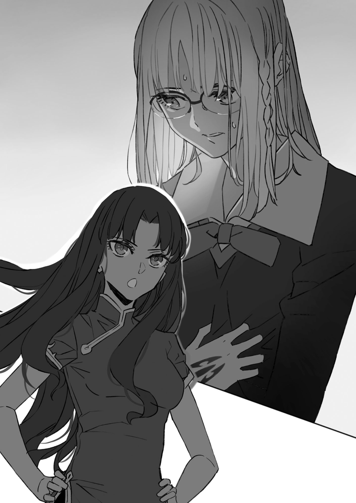
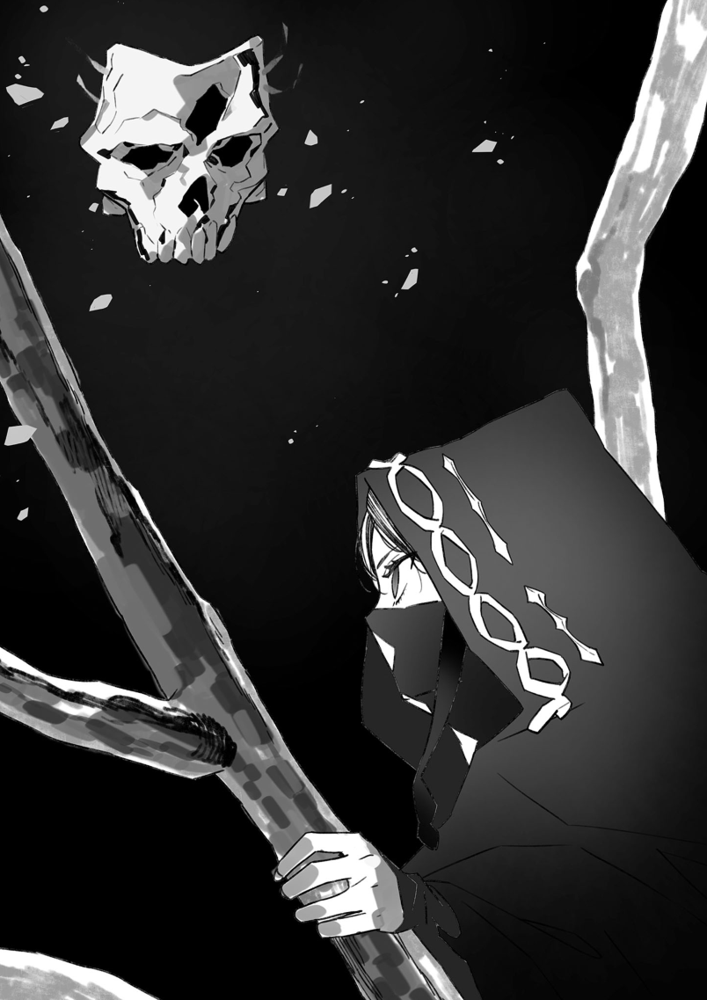

"A sombra põe fim à jornada para fora do desfiladeiro"
"Você enfim chegou...", murmurou Filia com ódio.
Sua Autoridade mantinha um arpão gigantesco imóvel, e seus olhos estavam voltados para o céu a leste, na extremidade oposta da corrente dourada.
A mudança foi dramática.
A corrente dourada inchou num instante. Cresceu de súbito, como o pé de feijão dos contos de fadas.
Os elos escalonados recuavam carregados de Energia Mágica só para permitir que Enkidu corresse por cima deles.
Enkidu avançava sobre a corrente com o ritmo de um coração pulsando.
Uma figura densa se aproximava em linha reta.
Ela já havia notado dias antes que alguém a observava, mas esse alguém não mostrara sinal algum de se aproximar até agora. Tentara provocá-lo na construção de seu templo, escolhendo conquistar uma floresta como a floresta onde eles haviam vivido com aquela garota, mas, ainda assim, ele não lhe dera a luta que ela queria. Filia supunha que o Mestre que invocara Enkidu fosse ou muito cauteloso, ou uma criatura tão fraca que Enkidu fora forçado a agir apenas na defensiva.
"Se tivesse ignorado esta tola Guerra do Santo Graal e saltado em mim no instante em que me sentiu, poderia ter lutado ao lado de Gilgamesh. Mas não o fez."
Ela falou com os olhos quase fechados. Sua entonação soava quase nostálgica por um passado já remotíssimo. Depois dessas palavras, a deusa Ishtar ergueu a cabeça em silêncio.
"Seja como quiser. Existe alguma virtude em viver apenas pelos outros, sem hipocrisia nem desonestidade."
"Ishtar, minha deusa...?"
Haruri estava diante dela, contendo Berserker. Notou a divindade de Ishtar se expandindo atrás de si e se virou.
A deusa caminhou até ficar lado a lado com Haruri, a suma sacerdotisa que nomeara, e, encarando a força inimiga que se aproximava pelo leste, ergueu a mão direita para o céu com um sorriso destemido.
"Mas..."
Em seguida, o poder divino da deusa Ishtar se expandiu e enfeitiçou a terra entre a floresta e a cidade.
"Você, pedaço de sucata incapaz de se impor a quem quer que seja, ousou me insultar... Já é tarde demais para se arrepender, expiar ou reparar essa humilhação. Você jamais chegará a coisa alguma. Deixe-me ver você se esmigalhar, apodrecer, secar, se contorcer, se desfazer e ruir enquanto tenta."
Essa foi a primeira manifestação aberta de hostilidade de Ishtar nesta era.
"...!"
Um calafrio horrendo percorreu o corpo inteiro de Haruri, como se o fim do mundo tivesse acontecido sete vezes seguidas.
Sua mente poderia ter se partido e encerrado suas funções vitais se Ishtar não a tivesse abençoado com a mentalidade de suma sacerdotisa do templo.
E, ainda assim, até essa fúria violenta se transformava numa voz que enfeitiçava o mundo quando liberada por Ishtar.
Um nexo invertido.
Enfeitiçada, a terra antes inorgânica ganhou um falso intelecto e funções orgânicas de vida, tornando-se capaz, em seguida, de possuir emoções.
Tornou-se ou uma gigantesca forma de vida, ou uma colônia de pequenas formas de vida.
Ondas, como se a argila tivesse ganhado vida, ergueram-se enquanto a terra excitada se enfurecia como um oceano turbulento e avançava contra Enkidu em conjunto com os vendavais.
"..."
Enkidu, por sua vez, nada disse.
Palavras eram tão desnecessárias quanto inúteis. Sua hostilidade se dirigia apenas a Ishtar.
O poder do Encanto não conseguia sequer alcançar seus olhos. As correntes e o ar tocados por Enkidu rejeitavam a deusa e tudo o que ela representava.
Somente por meios físicos, Enkidu escapou do assalto da terra transformada em fanática de Ishtar.
Em dois passos, chutou para longe as ondas de terra voadoras e abriu caminho a socos através da hostilidade que vinha de todas as direções.
Uma simples pisada reverberou alta como um trovão, e a rocha pulverizada transformou-se em correntes complexamente entrelaçadas, que começaram a envolver a corrente principal.
Um túnel de luz guardando a ponte dourada.
Enkidu despejou mais poder no arpão enquanto se infiltrava na Era dos Deuses.
Ishtar estreitou os olhos ao ver o arpão contestador se aproximar.
"Pedaço de sucata petulante."
Em seguida, comandou Haruri, que assistia àquilo prendendo a respiração.
"Faça Berserker me ajudar a deter essa sucata. Deixe as serpentes com Gugalanna."
"!
Sim, senhora!"
Haruri transmitiu a ordem à sua Serva Berserker como lhe fora mandado.
Agora que Enkidu já chegara tão perto, ordenou a ela que o detivesse... ou o destruísse.
Berserker voltou seu corpo gigantesco para o céu oriental, produzindo um ruído baixo de trituração contra os vendavais.
Desligou todas as funções que usava para bloquear as serpentes e a inundação que se aproximavam, e redesignou Enkidu como alvo exclusivo de todos os seus processos.
A vigia da floresta dos deuses, que as lendas dizem ter levado medo até mesmo ao Rei Herói Gilgamesh.
Diante desse monstro aterrador...
Diante da velha amiga que haviam reduzido a montes de carne com as próprias mãos, Enkidu murmurou em silêncio:
"Precisamos conversar... Huwawa."
Enquanto falava, carregou os membros com Energia Mágica.
"Mas só depois de... fazer esta deusa que encheu você de medo e, ao mesmo tempo, de bênçãos e tranquilidade... calar a boca."
Em seguida, Enkidu saltou, rápido como um relâmpago, mirando a deusa no templo.
Mas foi bloqueado por Berserker, o colosso chamado Huwawa.
Apesar da agilidade improvável para um corpo daquele tamanho, ela não contra-atacou.
Tanto Haruri quanto Berserker sentiam o poder de Enkidu e optaram por lutar na defensiva.
Estava claro que qualquer momento de distração seria tudo de que Enkidu precisaria para despedaçá-las.
Berserker havia derrubado antes toda uma chuva de mísseis modernos e, ainda assim, agora era pressionada a ficar apenas na defesa.
A arma criada para ser a pedra angular que mantém os deuses na superfície observava a adversária solidificar suas defesas por dever de proteger a deusa Ishtar.
"Isso é um problema... Batalhas de atrito não são a minha praia. O máximo que consigo durar são três dias e três noites", disse Enkidu, recordando-se do duelo com seu melhor amigo, Gilgamesh.
Dias nostálgicos de sua vida.
As palavras de Enkidu eram honestas e saíam do coração, sem o menor traço de ironia ou sarcasmo.
Porque, se fosse possível, gostaria que aquele curto duelo de três dias durasse para sempre.
Região dos planaltos
"As unidades estão se mobilizando", murmurou alguém da sala de aula do El-Melloi ao ver a corrente de ouro carregada de energia ser disparada e se estender pelo ar.
Suas palavras também se aplicavam a esse desfiladeiro.
Porque, quase ao mesmo tempo, apareceram dois cavalos vindos do leste da cidade, pouco depois da força policial da cidade e dos subordinados de terno de Tiné.
"Então vocês chamaram os organizadores desta Guerra do Santo Graal. Vocês enlouqueceram?"
A secretária de Tiné Chelc duvidou dos próprios olhos. Lançou olhares inquisidores para a turma do El-Melloi e para a equipe da polícia.
Vera Levitt, representando os vinte subordinados que a acompanhavam, respondeu com expressão indiferente:
"Este não é o momento de nos preocuparmos com posições e relações."
"...
Não é. Desculpe pelo comentário."
Havia algo que queria dizer, mas preferiu não dizer, por entender que suas palavras poderiam ferir a dignidade de sua dama. Lembrou a si mesma que um mago precisa conhecer contenção e voltou os olhos para os membros da sala de aula do El-Melloi.
Mas sua atenção logo se desviou para os dois cavalos.
Um homem vestido com uma armadura que projetava vigor e fortaleza observava os arredores com os olhos brilhando. Atrás dele, uma mulher se agarrava a seus ombros, tentando recuperar o fôlego.
"Ah, isso sim é incrível! Não dá para esconder nada dos meus olhos! Todo mundo aqui é um mago de primeira! Vocês parecem mais poderosos do que aquele Saint-Germain, meu autoproclamado mago da corte! Ah, desculpem, talvez essa comparação tenha sido rude, considerando que ele era um charlatão descarado..."
Ao ver Saber soltar informações sobre si mesmo com tamanha naturalidade, muitos magos suspeitaram por um instante que ele não fosse um Servo, mas sim algum artista de rua local.
Os subordinados de Tiné entendiam que ele era um Servo, mas, ainda assim, ficaram abalados com a enormidade da declaração. Hansa se dobrou de rir.
Por outro lado, os policiais que já o conheciam o bastante apenas abriram sorrisos sem graça.
Alguns alunos do El-Melloi franziram a testa, supondo tratar-se de piada, enquanto outros trocavam sussurros sérios sobre sua identidade.
"Ele disse Saint-Germain?"
"Isso significa que ele é... Luís XV?"
"Pode ser Alexandre, o Grande..."
"Um Rákóczi...?"
"Eu vou apostar alto e dizer que é a Rainha de Sabá."
Observando o grupinho de jovens cochichando palpites como se ele não pudesse ouvi-los, Saber riu ao som ritmado dos cascos de seu cavalo enquanto o conduzia para um ponto de onde pudesse ver melhor a floresta a oeste.
"Espera, espera, espera, Saint-Germain me traía com quantos outros reis? Suponho que eu já devia esperar isso de um sujeito que diz nunca envelhecer. E, na minha época, ele dirigia com a maior naturalidade um daqueles veículos chamados 'carros' que hoje são normais. É normal um mago fazer com naturalidade esse tipo de coisa anormal?"
"Será que o conde de Saint-Germain era algum foragido do Instituto Atlas...? Acho que acabei de descobrir mais uma coisa que eu preferia não saber..."
Saber deu de ombros ao ouvir o gigante de óculos dizer isso.
"A mera presença dele espalha informações que ninguém fica melhor por conhecer. E, apesar de se dizer meu mago da corte, a única magecraft que ele me ensinou foi como consertar joias danificadas."
Suas palavras deixaram um ou dois magos de olhos brilhando, mas eles se contiveram, talvez julgando que não era hora de perseguir o assunto.
"Oh! Mas, ainda assim, as coisas estão ficando impressionantes!"
Do alto dos penhascos, Saber observava a floresta com maravilhamento infantil, como se o humor das pessoas ao seu redor não significasse nada.
Seus olhos estavam fixos na perna de alguma criatura, enredada por serpentes gigantescas. A perna descera do céu, esmagando a enchente negra que engolia a floresta. As sucessivas explosões douradas geradas por ela erguiam por vezes a rocha do solo para o ar.
"Então nossa frente unida é para lutar contra aquela criatura ali? Se eu tivesse sido manifestado como Rider, poderia distribuir meu poder por todo o esquadrão. Infelizmente, sou um Saber."
Saber analisava alegremente suas forças enquanto contemplava as cenas fantásticas à sua frente.
Então, de repente, virou o cavalo e se apresentou às pessoas presentes, como se só agora tivesse lembrado de fazê-lo.
"Perdoem a descortesia de eu lhes falar de cima do cavalo! Sou um Servo participante desta Guerra do Santo Graal sob a Origem Espiritual de Saber! Peço apenas que compreendam que não posso descer do cavalo neste momento! Não se trata de posição social, é simplesmente que as pernas bambas da minha Mestra seriam um problema se ela tentasse pôr os pés no chão!"
"Uuugh... T-tudo bem, daqui a pouco eu consigo descer...", disse a garota, gemendo antes de erguer a cabeça para olhar ao redor.
Ah, o padre daquela igreja... ele está vivo.
Não se viam desde o colapso da igreja. Ayaka suspirou aliviada ao ver que o padre de tapa-olho estava, em sua maior parte, ileso.
Ótimo, a equipe da srta. Vera também está bem... Hm?
Foi então que Ayaka percebeu algo estranho.
Além da polícia e do grupo vestido de terno, havia um terceiro grupo, sem uniforme, composto por jovens que a observavam com choque e cautela.
"É Sajou..."
"Ayaka de Yumina, né?"
"Ela pintou o cabelo?"
Ayaka estremeceu ao ouvir aqueles sussurros, esqueceu das pernas instáveis e engoliu em seco.
"Hã... O-o quê?"
Ayaka não reconhecia ninguém ali.
Uma mulher de aparência japonesa, vestida de vermelho, a observava com um olhar afiado, mas, mesmo assim, Ayaka não conseguia se lembrar.
Ignorando a ansiedade de Ayaka, os jovens trocavam palavras confusas.
"Mas Sajou está na Romênia. Nós confirmamos isso."
"Não há dúvida..."
"Sério? Eu não acho as duas parecidas. O cheiro da Sajou é mais harmonioso, mais sinuoso."
"Você só não está julgando com os olhos, Svin."
"Ainda assim... se o Svin diz isso, então podemos tomar como certo que ela é outra pessoa."
Aqueles estranhos estavam discutindo sobre ela.
Pela primeira vez em muito tempo, Ayaka se lembrou de que fora lançada a um destino impiedoso. Desceu do cavalo, preparando-se para o pior, e falou com determinação:
"Ei."
Todos os jovens reagiram à voz de Ayaka e voltaram os olhos para ela.
Ayaka cambaleava diante da pressão. Era difícil acreditar que tinham praticamente a mesma idade que ela.
Não percebeu quando Saber desceu do cavalo, mas lá estava ele, segurando-lhe o ombro.
"Está tudo bem."
"... Certo, obrigada."
Ayaka se acalmou e lhes fez uma pergunta.
"Vocês estão falando do meu rosto faz um tempo, mas... quem são vocês, afinal? Vocês... me conhecem?"
Ao ouvir isso, um membro visivelmente mais decidido do grupo de jovens deu um passo à frente.
"Não, não conhecemos. Para ser mais exata, sabemos da sua existência há poucos dias e só."
"Hã?"
"Somos nós que queremos saber quem você é. Ainda dá para nos aliarmos a alguém em quem não confiamos, sabendo que vamos traí-la depois. Mas, se for alguém que nem entendemos, aí teremos problemas maiores do que a simples necessidade de cautela extra."
A mulher fez um gesto para dispersar os colegas.
"Parem de perder tempo. Eu resolvo as perguntas sobre ela, então voltem a observar a floresta. Vocês sabem que o mundo pode acabar enquanto ficamos ocupados com isso, não sabem?"
Em resposta a suas palavras, outros membros começaram a posicionar ferramentas de magecraft e círculos mágicos para reagir às mudanças anormais na floresta, muitos com um dar de ombros.
A mulher de vermelho, mantendo o olhar fixo em Ayaka, fez uma pergunta direta.
"Perguntando de novo: quem é você? Por que tem o rosto da Sajou?"
A visão de Ayaka se distorceu e voltou ao lugar num instante.
Sem compreender as palavras lançadas contra si, Ayaka buscou força dentro de si mesma e devolveu com uma pergunta própria.
"Por quê? É porque... eu sou Sajou Ayaka... Espera, existe alguém com o mesmo rosto que eu?"
"Sim. O cabelo dela é de outra cor, mas, tirando isso, vocês são fisicamente idênticas. Certo... então outra pergunta. Você já ouviu a palavra Fuyuki?"
"... Sim, é a minha cidade natal."
"Heh... Em que parte de Fuyuki você morava? Shinto? Miyama? Homurahara?"
"Hã? Ahm..."
Sua cabeça doeu.
Seu passado latejou.
Sua memória se retorceu.
Depois de sentir uma névoa espessa encher seu cérebro de imediato, Ayaka conseguiu, por pouco, arrancar o nome de um lugar das profundezas da mente.
"Kurokizaka... os Apartamentos Semina."
A mulher de vermelho apertou os olhos por um instante quando ouviu esse nome, mas apenas Saber percebeu, não Ayaka.
Quando Ayaka chegara a essa cidade e dissera seu nome, a polícia afirmara que a investigaria e não insistira por mais detalhes sobre seu passado.
Talvez, se ela tivesse permanecido lá por mais tempo, teriam pressionado de forma dura pelas discrepâncias encontradas nos documentos recebidos.
Mas, como isso não aconteceu, Ayaka permaneceu na cidade simplesmente como "Sajou Ayaka, do Japão".
Foi por isso que ela, a própria Ayaka, não havia feito até agora perguntas profundas sobre quem era.
Ninguém jamais a confrontara antes.
"Consegue dizer o nome de algum amigo que tinha em Fuyuki?"
A mulher de vermelho continuou o interrogatório metódico, não de forma agressiva, mas também não suave. Saber julgou que não havia malícia nela, e que seus métodos eram, para os padrões dos magos, bastante honestos e gentis.

Foi por isso que Saber não atrapalhou suas perguntas, embora estivesse pronto para agir se algo acontecesse.
"Amigos...?"
A névoa em sua cabeça se adensou, mas Ayaka não fugiu dela.
Não posso fugir agora. Se eu desistir aqui, essa névoa nunca vai se dissipar.
Tateando através das próprias memórias, Ayaka estendeu a mão para os dias em Fuyuki que evitava encarar.
"Isso... eu tinha... tive amigos..."
Em meio aos pensamentos turvos, Ayaka se lembrou de alguma coisa.
Pessoas cujos rostos não estavam gravados com clareza. Pessoas que diziam seu nome.
"Foram eles que me disseram meu nome... Sajou Ayaka..."
Os nomes das pessoas que lhe ensinaram que ela era "Sajou Ayaka".
"Gotou... Gai... e... Tsunokuma...?"
"O quê? ... Hã? Você está falando sério?"
No instante em que esses nomes surgiram, a mulher de vermelho deixou escapar uma nova reação de surpresa.
"Nunca pensei que ouviria esses nomes aqui... Já que você mencionou os Apartamentos Semina, eu esperava ouvir Himuro, e talvez Mitsuzuri e Saegusa se sua intenção fosse mesmo me enganar... Gh... Se a sua meta era me confundir, parabéns pelo serviço."
"Hã...?"
"Qualquer um percebe que a Ayaka está muito mais confusa do que você."
Saber entrou em cena para salvá-la e começou a se intrometer na conversa.
"Hmm... então vocês não conseguem confiar em Ayaka porque... uma amiga do grupo de vocês tem o mesmo rosto e o mesmo nome, mas é outra pessoa inteiramente."
"E dá para culpar a gente?"
A maga de vermelho manteve sua posição com cautela.
Saber percebeu na mesma hora que não se tratava de um caso de Mestre ou mago tratando um Servo como mero familiar.
Embora ela também não seja desprovida de autoestima... Está realmente acostumada a este tipo de situação. Ela sabe muito sobre Servos e Espíritos Heroicos. E não só isso... também sabe bastante sobre Fuyuki.
Mesmo sabendo disso, Saber manteve sua política de jamais esconder quem era.
"É, também poderíamos estar lidando com um changeling. Fadas são coisas assustadoras, sabia? Nunca se sabe o que elas vão aprontar, e a maioria enxerga os humanos como nada além de um rabisco num pedaço de papel."
"Saber?"
"O que exatamente você está querendo dizer?"
Ayaka e a maga de vermelho olharam para Saber com muitas perguntas nos olhos. Saber respondeu num tom claro e direto:
"Corpos de reposição. Ilusões. Bestas fantasmagóricas. Vampiros. Nesta era, dá até para mudar o rosto de uma pessoa com tecnologia médica, não? Até maquiagem e jogo de mãos podem bastar. Existem tantas causas possíveis para haver várias Ayakas quanto há estrelas no céu. Mas esse não é o problema", postulou Saber, assentindo para si mesmo. "É verdade que vocês têm motivo para suspeitar da Ayaka. Isso é natural. Mas a única Ayaka que eu conheço é a que venho observando desde que fui invocado... e eu digo que ela é confiável."
"Então você quer que a gente aceite a opinião do Servo dela?"
"Não, quero dizer que eu sou a garantia de vocês."
"A nossa garantia?"
"A única razão para eu ainda não ter matado todos vocês é que Ayaka quer provar que é uma boa garota", disse Saber, abrindo o mais brilhante de seus sorrisos.
"... Com licença?", a própria Ayaka ergueu a cabeça com uma voz cheia de incredulidade.
Saber continuou friamente, como se não a estivesse ouvindo.
"Eu vim porque vocês nos convidaram para lutar lado a lado, mas tudo o que estou vendo é minha Mestra sendo alvejada por perguntas. Para mim, isso basta para assinar a sentença de morte de vocês."
"Espera aí, o que você está...?"
"Não se preocupe, Ayaka. Se chegar a esse ponto, eu posso mobilizar todos os meus retentores de uma vez. Não vou perder isso aqui", afirmou Saber, com um dar de ombros, como se não fosse nada demais.
O ambiente esfriou de uma vez.
E não foi só a mulher de vermelho. Os magos silenciosos, ocupados com suas próprias tarefas, também viraram suas chaves mentais, embora continuassem de costas.
Ao lado deles, o rosto de Hippolyte permanecia imóvel, mas ela já havia deslocado o centro de gravidade do corpo.
Estava pronta para iniciar uma luta a qualquer momento, enquanto Ayaka, naturalmente, não percebia a mudança de situação, Saber exibia um sorriso destemido e tanto a polícia quanto os subordinados de Tiné enrijeciam a expressão.
Mas quem fez o primeiro movimento foi justamente aquela que não notara a escalada da tensão: a própria Ayaka.
Tudo o que ela tinha em mente eram as cenas do sonho que tivera naquela manhã.
Saber estava numa espécie de cidade-fortaleza, e ela vira uma multidão inteira tingida de vermelho.
Coberta de suor da cabeça aos pés, Ayaka agarrou o braço de Saber com força.
"Saber!"
E então gritou com toda a força que tinha:
"Nem brinca com uma coisa dessas!"
"... Ayaka, você achou que eu estivesse brincando?"
"Se não estava, isso é ainda pior! Eu já te falei antes! Eu fico com os trabalhos sujos! Não tenho poder para fazer isso sozinha! Mas não é justamente por eu ser a Mestra que você só vai matar pessoas com o meu comando?! Ou será que você não confia tanto assim em mim?!"
Nunca a tinha visto tão séria.
O silêncio dominou o lugar.
Apesar dos ataques violentos, dos clarões e dos vendavais vindos da floresta a oeste, o Campo Limitado da Magia das Borboletas se tornou estranhamente silencioso por alguns segundos que pareceram uma eternidade.
E o que rompeu a tensão foi o sorriso audacioso de Saber desaparecer para dar lugar ao sorriso de uma criança que acabara de concluir uma travessura bem-sucedida.
"Ela pareceu estar fingindo para você?", perguntou à maga de vermelho.
"Hã?", murmurou Ayaka, sem entender o que havia acabado de acontecer.
A maga de vermelho fechou os olhos, exasperada, e respondeu a Saber depois de um longo suspiro:
"Tá, certo, pelo menos você conseguiu me convencer de que ela não é uma maga capaz de viver como atriz. E também de que, humana ou não, no que quer que ela faça, ela é amadora num nível assustador."
"É. Mas me permita um pedido formal de desculpas. Fosse blefe ou não, minha ameaça de matar vocês foi extremamente rude. Então deixem que eu compense isso com o meu trabalho daqui em diante."
"Bom, jogos de engano e trapaça são parte do cotidiano para nós. Só o fato de você se desculpar já o coloca acima da maioria. Mas repare que eu não disse 'deixa para lá'. Vamos, sim, arrancar o couro de vocês no trabalho."
A conversa entre Saber e a maga de vermelho normalizou o clima geral, e os magos voltaram às próprias tarefas trocando sussurros do tipo: "Cara, ele me enganou direitinho", "Espíritos Heroicos são mesmo outro nível. Não consigo nos ver vencendo isso", ou "Eu não estava preocupada, Tohsaka sempre sabe jogar esse tipo de aposta".
"...
Ah? ... Foi isso que aconteceu?"
Depois de pensar um pouco, Ayaka percebeu que fora arrastada para a encenação de Saber.
"Saber?"
"Eh, tudo acaba bem quando termi... Uah."
Saber soltou um gemido quando Ayaka puxou sua trança com força.
"... Hm, mas é, eu entendo que você armou essa pequena farsa porque achou que eu precisava de ajuda..."
"Hahaha, na minha opinião, esse seu talento para entender os outros é uma verdadeira virtude."
"Estou dividida entre agradecer e te dar uma bronca por brincar com a ideia de matar todo mundo. O que eu faço numa hora dessas?"
As veias de Ayaka ainda saltavam, mas ela conseguiu esboçar um sorriso rígido. Ao vê-lo, Saber fez uma pausa para pensar e, ainda com o cabelo sendo puxado, apresentou o que acreditava ser uma ideia genial.
"Numa hora dessas, você devia tentar cantar. Quando fui feito prisioneiro, fiquei tão solitário que compus uma canção de reclamação que basicamente dizia 'estou aqui, então quero que alguém, qualquer um, venha me resgatar'. E eu também tenho que me desculpar por ter te irritado, me perdoa!"
À medida que a grandiloquência de Saber neutralizava os sentimentos cáusticos de Ayaka, ela se viu incapaz de sentir o alívio que deveria sentir.
O sonho envolvendo Saint-Germain já era uma preocupação, mas sua maior fonte de desconforto vinha do entendimento de que a atuação dele agora não fora uma farsa, de que ele realmente estava disposto a matar todos os humanos que visse. O conhecimento de que isso fazia parte de sua natureza.
Como o próprio Saber dissera, ela tinha talento para entender os outros.
Não se trata de bem ou mal. O problema do Saber é que ele não sabe hesitar. Ele ignora por completo medo, culpa e ansiedade diante da ideia de que seus atos têm consequências. Ou talvez siga em frente abraçando tudo isso de frente.
Ayaka não conseguia considerar isso algo inteiramente ruim.
Era um fato que, muitas vezes, fora salva justamente por essa tendência dele.
E foi por isso que Ayaka revisou sua postura.
Agora pensava que não podia permitir que ele carregasse sozinho a má fama que vinha acumulando sem necessidade por causa dela.
Foi isso que decidiu no instante em que formalizou o contrato entre os dois.
Se for para afundar, afundamos juntos.
A maga de vermelho comentou a renovada determinação de Ayaka.
"... Você já estava na América quando nós chegamos. Então é difícil imaginar que isso seja um blefe direcionado a nós e, se a ideia fosse manter o Flat e o professor sob controle, você tinha gente muito melhor para escolher. Sinceramente, não existe motivo para você escolher a Sajou, alguém cuja situação nós conseguimos confirmar por telefone."
"Hã? Vocês... conseguem ligar para ela agora?"
"Tentamos perguntar a ela, mas foi inútil. Ela não faz a menor ideia. Pareceu suspeitar que alguém da família tivesse feito alguma coisa, mas acabou se confirmando que ela não tinha nada a ver com isso."
"A-ah... certo..."
Havia alguém com o mesmo nome que o dela.
Confrontada com esse fato, Ayaka...
descobriu-se agindo com mais frieza e racionalidade do que esperava.
Hã? Por que eu estou tão calma com isso?
O normal seria reagir com raiva, desespero e pânico à constatação repentina de que não sabia quem era.
Mas, em vez disso, ela encontrava paz no fato de perceber com clareza as contradições.
O lado incômodo estava justamente em não conseguir entender o que a fazia se sentir tão aliviada.
Espera, isso não faz sentido. Está claramente errado.
Então por que eu não estou tentando lembrar do meu passado com todas as forças?
Mesmo agora, continuo procurando desculpas... Não, este não é o momento para isso.
Era verdade que a névoa tremeluzira violentamente por causa das palavras da maga de vermelho, mas Ayaka ainda permanecia incapaz de dar um passo sequer para dentro das próprias memórias.
Na verdade, se ela não tivesse a coragem de pedir ajuda urgente para fazer as lembranças voltarem, não teria sido capaz de se lembrar de sua lógica e de seus motivos, nem de produzir respostas tão firmes.
A maga de vermelho ignorou Ayaka por um instante e dirigiu-se a Saber, com quem esperava unir forças.
"Ainda assim, dá para ver que você é algum tipo de cavaleiro entre os Espíritos Heroicos...
Se já tomou parte em batalhas na vida, então sabe muito bem o quão assustador é ter um fator desconhecido no campo de batalha."
"Bem, se esse é o ponto, eu diria que não existe nada mais desconhecido do que o que está acontecendo na floresta a oeste."
Com essa observação sarcástica, Saber voltou os olhos para o oeste, onde a mata permanecia fortemente envolta em vendavais, tornando difícil identificar à distância o que de fato estava ocorrendo.
Mesmo assim, de vez em quando ainda se ouviam estrondos de impacto e trovões, acompanhados de clarões dourados e do movimento de algum apêndice gigantesco.
"Não somos estúpidos a ponto de correr de frente para aquilo."
"Verdade. Todos vocês são muito inteligentes", disse Saber, divertindo-se ao observar os companheiros reunidos. "Não é exatamente por isso que vocês precisam de alguém para fazer o papel de tolo?"
Saber recebeu uma resposta do aristocrático rapaz que manipulava borboletas para sustentar o Campo Limitado.
"Obviamente nunca convidaríamos você para lutar ao nosso lado com a intenção de usá-lo sozinho como isca ou peão sacrificial. Muito menos alguém que deixa tão claro, no estilo e na personalidade, que é um rei."
"Não é bem assim que a coisa funciona. Ouvi dizer que o estimado rei Arthur marchava pessoalmente para a batalha e foi com as próprias mãos que derrubou o vil rei Vortigern e o traidor Mordred.
Eu mesmo fui à batalha muitas vezes como primeira lança ou sozinho.
Como alguém que sempre idolatrava Arthur, o Rei Ancestral, e Alexandre, o Grande, sonhava de forma nada realista em derrubar um país inteiro apenas com meu próprio valor marcial", contou Saber, cantando mais louvores aos heróis do passado do que a si mesmo.
A leve reação da maga de vermelho ao ouvir Saber falar do rei Arthur não escapou aos olhos dele, mas, entendendo que não era o momento de perseguir essa pergunta, conteve-se.
Sua contenção, porém, durou pouco.
"Aliás, você que conhece Fuyuki, já viu o rei Arthur em...
Uooooooh!"
Enquanto Ayaka puxava sua trança e seu braço, Saber lançou à maga de vermelho um olhar ansioso por conversar mais, mas a bronca de Ayaka o convenceu a seguir adiante com o assunto.
"Vocês vão ter o tempo do mundo para falar disso depois que resolvermos esta situação."
"Vejo que nós dois já esgotamos as ideias brilhantes para lidar com o templo a oeste, mas precisamos fazer alguma coisa antes que essa guerra de atrito termine."
"Você chama aquilo de guerra de atrito...?
Quê...?", murmurou Ayaka para si mesma, olhando para a floresta a oeste depois de absorver as palavras de Saber.
Mas, como não pretendia se intrometer, permaneceu calada e deixou a conversa seguir.
Os participantes daquela reunião estratégica eram Werner Ceasarmund, o manipulador de borboletas, e a maga de vermelho, Tohsaka Rin.
Juntavam-se a eles uma maga de vestido azul chamada Luviagelita Edelfelt e inúmeros magos que afirmavam ser associados de Tiné Chelc.
Por fim, um rosto familiar para Saber e Ayaka: Vera Levitt.
O padre Hansa escolheu assistir ao debate de longe, dizendo: "Não vou discutir a direção que vocês tomarem. A esta altura, o único jeito de encobrir aquilo é derrotá-lo, não?"
Ao se afastar, brincou: "Eu invento alguma coisa no meu relatório.
Imagino que a Igreja Sagrada vai apagar esta cidade do mapa se não engolir minha conversa, hahaha", mas ninguém ali recebeu isso como piada.
Depois de Saber murmurar "Isso realmente parece uma coisa que a Igreja Sagrada faria...", ele fez perguntas a Vera para recolocar a conversa nos trilhos.
"Certo, me digam qual é o plano de vocês. É esperar aquilo se resolver e depois varrer as forças exaustas? Ou reforçar a cidade ou este desfiladeiro como uma fortaleza para uma batalha de cerco? Nesta invocação, não fui manifestado como general de táticas militares, mas como um simples cavaleiro.
Vou seguir a estratégia que vocês, magos modernos capazes, escolherem." Saber então olhou para Hippolyte. "Você não pensa o mesmo, líder amazona?"
"De forma geral, sim. No entanto, os traços da minha Origem Espiritual favorecem liderar marchas."
Hippolyte assentiu em silêncio ao indício de Saber de que ele havia adivinhado seu Nome Verdadeiro.
Ayaka vinha ignorando a conversa, mas, tomada por uma súbita curiosidade, fez um comentário a Saber.
"Conhecendo você, eu esperava te ouvir dizer que podia invadir o templo sozinho."
"Bem, para ser honesto, é exatamente o que o meu lado cavaleiro quer fazer. Mas não posso agir assim quando estamos unindo um exército conjunto com forças diferentes, certo?
Já comandei forças aliadas antes e preciso dizer: é um saco."
Recordando um passado distante, Saber fechou os olhos numa rara expressão de cansaço.
Depois de balançar a cabeça em silêncio, falou consigo mesmo em voz alta.
"Bom, sempre vai existir um sujeito que toma as próprias decisões, e o que realmente importa é o quão bem você consegue improvisar suas estratégias levando em conta os movimentos dele. Mas, mesmo que alguém quebre formação por não resistir à ferocidade e ao elemento surpresa do inimigo, ou um aliado desobedeça ordens, ainda dá para explorar esses movimentos e pegar o oponente desprevenido."
Dito isso, Saber voltou os olhos à floresta a oeste.
"Se vocês pensarem naquela floresta e naquele templo como uma cidade, então a chance de um ataque veloz conquistá-los depende das características do general que os defende.
Se não for um general, então de um rei... ou de um deus. Eu já derrotei uma espécie de criatura demoníaca chamada Apóstolo Morto, mas esta será a primeira vez que conquisto o castelo de um deus."
"Ora, estou surpresa de saber que você matou um Apóstolo Morto em vida, Saber."
Saber reagiu às palavras de Luvia com um sorriso constrangido e um olhar de lado para Hansa.
"Foi só um, e precisei me unir ao meu inimigo de toda a vida e praticamente esgotar nossas forças combinadas.
E, se quer saber, a limpeza depois foi a parte mais dura. Recomendo que nunca se envolvam com ninguém do lado secreto da Igreja. Não posso falar por todos, mas a maioria é irritante."
"Concordo", respondeu Hansa de longe, sugerindo ter ouvido tudo.
"Concordo", comentou Rin também, sem se dar ao trabalho de elaborar.
Depois disso, Vera ergueu a voz como representante da polícia.
"Então... a ideia é esperarmos aqui até o estado da floresta a oeste mudar?"
Era uma pergunta natural da parte de Vera, que sabia que estavam correndo contra o tempo antes da destruição da cidade, mas isso fez Werner balançar a cabeça.
"Não, não temos tempo de esperar a conclusão deles. Se a autoproclamada deusa vencer, a situação só piora para nós."
"Como assim?", perguntou a secretária de Tiné em resposta.
"Quando um Espírito Heroico é derrotado em batalha, sua alma flui para o Graal Menor. Preciso dizer mais alguma coisa?", respondeu Tohsaka Rin, provavelmente a mais bem informada ali no assunto Guerras do Santo Graal.
Nas Guerras do Santo Graal que seguem o modelo de Fuyuki, o Santo Graal é dividido entre um Graal Maior e um Graal Menor.
O Graal Maior funciona como um reservatório que acumula Energia Mágica a partir do pulso da terra, enquanto o Graal Menor existe como o dispositivo que recolhe as almas dos Espíritos Heroicos invocados.
Depois que um Espírito Heroico é derrotado em batalha e já não consegue sustentar sua Origem Espiritual, sua alma flui para o Graal Menor, onde é depositada.
Quando a Guerra do Santo Graal se conclui, suas formas espirituais se solidificam na forma do próprio Graal, formando um dispositivo realizador de desejos.
Dizem que, nesse momento, o Santo Graal oficial alcança o domínio da Terceira Magia, a materialização da alma, permitindo a obtenção de uma imortalidade verdadeira.
Vera se lembrou de uma conversa estranha em que Francesca e Faldeus haviam mencionado que "o Santo Graal de Fuyuki tinha outro propósito além da Terceira Magia", mas Faldeus dissera "Esse não é o nosso objetivo", e Francesca acrescentara: "E eu nem me interesso por isso; além do mais, o máximo que o Graal Falso que eu fiz pode oferecer é uma simulação da Terceira Magia... ele jamais vai conseguir abrir a brecha necessária para ir além disso."
Como o chefe não apresentara objeção alguma a esses detalhes, Vera também não pediu explicações adicionais.
Tohsaka Rin, por sua vez, não demonstrou a menor intenção de se alongar nisso. Apenas prosseguiu falando sobre a presença do Graal Menor.
"Seu chefe sabe o que é o Graal Menor?", perguntou Rin a Vera.
Como alguém que estava do lado das mentes por trás da Guerra do Santo Graal, Vera hesitou por um instante, mas, como recebera permissão do chefe para revelar qualquer carta que tivesse na manga, exceto Nomes Verdadeiros de Servos, assentiu devagar.
"... Sim. Uma colaboradora chamada Francesca trouxe um homúnculo Einzbern... unidade de nome Filia."
"O quê?"
Quem ergueu a voz foi Ayaka.
"Quando você diz Filia... está falando daquela Filia?"
"Há muito menos para explicar se você já a conhece.
Então dá para entender aonde a srta.
Tohsaka quer chegar."
Saber acompanhou as palavras de Vera com um dócil aceno de cabeça.
"Entendi.
Toda vez que um Espírito Heroico morre, sua alma flui para o Graal Menor, que é o corpo desse homúnculo.
Mas o problema é que esse Graal Menor está ocupado por essa divindade Ishtar..."
"Um Graal Menor normal não viria equipado com a função de converter a alma de um Espírito Heroico em poder que ele próprio possa controlar.
Mas a história muda se o que está dentro dela for realmente um deus, ou algo suficientemente parecido com um."
Luvia então prosseguiu a partir do ponto em que Rin parara.
"Se o primeiro Espírito Heroico a cair na guerra possuía Divindade, então a entrada dele no fluxo do Graal pode muito bem ter sido a causa desse despertar... ou pelo menos é a nossa hipótese."
"Então o que vocês estão dizendo é que, se alguém cair nessa confusão e a alma for absorvida... é aí que tudo sai de vez do nosso alcance?"
"Exatamente.
E, por causa disso, nosso plano é simples.
Vamos invadir o templo agora."
Intrigado com a afirmação de Rin, Saber fez uma pergunta divertida.
"Como é? Eu não tinha acabado de ouvir você dizer que não eram estúpidos o bastante para correr para lá de frente?"
"Sim, a palavra-chave foi de frente", declarou Tohsaka, com total desrespeito, como quem lança um desafio a um poder superior.
"Eu não me importo com a natureza dessa divindade... vou cair na porrada com ela em combate limpo, pelas costas."
Diante do Templo Neo-Ishtar
A definição de poder.
A definição de mundo.
Essas frases eram convertidas repetidamente em imagens reais no interstício entre terra e céu.
Um furacão gigantesco, encarnação de uma besta divina.
A guardiã dos deuses, monstro da calamidade.
A enchente negra criada pelo vingador que rejeita e afronta os deuses.
A arma de corrente e pedra angular criada pelos deuses.
A emanação ecoada de uma deusa ancestral tentando ascender outra vez ao posto de divindade.
O que antes fora a floresta oeste agora se tornara um tanque de areia dominado por relíquias da Era dos Deuses e por aqueles que a rejeitam.
O Espírito Heroico e a criatura mágica que por ali vagavam não eram mais dignos do que grãos de poeira naquele lugar.
Quantidades imensas de energia circulavam sem parar pelo cenário, só para provar esse ponto.
Ela não estava preparada.
O Espírito Heroico que tropeçara naquele tanque de areia só lamentava a própria falta de experiência.
Sempre fora arrogante.
Talvez, em certo sentido, seus esforços para se aproximar dos dezenove grandes e piedosos já tivessem sido o primeiro sinal de sua imaturidade.
Um Espírito Heroico elevado, à mercê das ondas de poder que se avolumavam.
Ela não havia realizado absolutamente nada desde que se manifestara como uma Assassin sem nome.
Não exterminara a cria infernal que contaminara sua alma com Energia Mágica maligna.
Não salvara a jovem garota manipulada pelos próprios pais.
Não impedira a destruição da cidade, nem mesmo argumentando contra aquele poder estranho que se autoproclamava Deus.
A cena que se desenrolava diante da Assassin sem nome podia ser descrita como o colapso lento e gentil do mundo.
Serpentes do tamanho de montanhas enredavam uma besta colossal muito maior que elas, e a terra se via coberta por uma enchente negra e revolta.
Além disso, um arpão gigantesco se aproximava, e ela supunha que pertencesse ao Espírito Heroico que encontrara na floresta.
A mulher que se dizia deusa Ishtar enfeitiçava o próprio mundo e o torcia à sua vontade.
Isso era algo que ela jamais poderia tolerar.
Não, mesmo que tolerasse, ainda assim precisaria pôr um fim nisso pelo bem das pessoas da cidade.
Mas a situação já havia ultrapassado o ponto em que seus sentimentos importavam.
Ela mal conseguira escapar da inundação negra, agarrando-se às árvores da floresta, e isso era tudo o que podia fazer.
Se tentasse escapar em forma espiritual, acabaria inevitavelmente engolfada pelo redemoinho de Energia Mágica e morreria no mesmo instante.
Sua situação seria suficiente para abater qualquer humano comum, ou mesmo qualquer Espírito Heroico comum.
Mas seu coração não cedia.
Diante do choque entre poderes que podiam ser descritos como brutalidade suprema, a Assassin sem nome continuava procurando algo que ainda pudesse fazer.
Estava mais do que disposta a oferecer a própria vida.
Mas sua vida estava muito longe de bastar para resolver aquela situação.
"HAHAHA!
Minha adorada Assassin, minha amada! Você e eu não passamos de grãos de poeira diante da brutalidade desse poder!
Ah, a doce alegria de ver pela primeira vez o mundo no mesmo plano que você!
O gosto do desespero merece ser saboreado! Sim, enfim me sinto preparado para morrer, se for preciso! AH, SIM!
Meu único amor! Perecer ao seu lado não seria..."
A Assassin sem nome ouvia um fluxo incessante de delírio vindo da árvore ao lado, mas o ignorou e desferiu o golpe de seu Fantasma Nobre.
"Batimento Delirante ...Zabaniya..."
Por um fio de cabelo, Jester desviou do golpe do braço vermelho-escuro que brotara das costas de Assassin.
Mas seus movimentos estavam muito mais apagados do que antes.
Se Assassin dedicasse todo o seu poder a matar Jester, agora havia uma chance real de apagá-lo.
Ela, porém, não sabia por quanto tempo ainda duraria a Energia Mágica que estava tomando emprestada de Ayaka.
Nesse caso, não seria melhor apostar tudo num raio de esperança e ir exterminar o ser que se chamava deusa?
Ela hesitava.
Essa hesitação, pensou a Assassin sem nome, era a marca de sua imaturidade.
Poderia lamentar a própria fraqueza, mas não tinha tempo para isso.
O que fazer?
Qual é a escolha certa?
Seguir a lógica ou a emoção?
Tenho sequer o direito de escolher?
"Ah, ah, bela Assassin, minha adorada amada!
Já não resta nada que possamos fazer. Mas ver você, de fé tão bela, sendo forçada de joelhos por um poder estrangeiro é... é... AH! Serei honesto!
Era tudo o que eu queria ver! Meu amor só podia se completar comigo atormentando e quebrando você. Se isso já está além do meu alcance, fico bastante satisfeito com o acordo menor de assistir aos deuses fazerem isso por mim!
Você está decepcionada comigo? Por favor, esteja. Eu disse que estava disposto a me contentar com menos quando se tratava do nosso amor!
Que queda moral! Então nós, um homem desanimado e uma mulher desalentada, precisamos encontrar beleza em desaparecer juntos desta era em..."
Palavras de delírio vinham da árvore oposta, mas a Assassin sem nome continuava a ignorá-las.
Mesmo assim, um choque semelhante, assim como a impaciência, já começava a bater às portas internas de seu coração.
Cada pisada da perna da besta divina, familiar da mulher que nem sequer era uma Serva, provocava um novo cataclismo.
Não existia meio de impedir isso.
Ela não tinha nada.
Então qual seria o sentido de continuar se opondo?
Imaginou outra versão de si mesma estendendo a mão para ela por trás.
Seu outro eu lhe sussurrava ao ouvido: "Você já fez o suficiente."
Também soava como se esse eu alternativo resmungasse queixas cheias de rancor.
"A vida teria sido tão mais fácil se você tivesse escolhido viver como uma pessoa comum em vez de mirar as alturas e achar que poderia viver como o Velho da Montanha."
As palavras "agora você pode descansar em paz" soaram inesperadamente tentadoras.
"Tudo o que você tentar será inútil."
"Então por que não larga tudo e foge?"
"Sim, você poderia..."
"...levar aquele mercenário com você e..."
Com um braço, a Assassin sem nome estrangulou o próprio eu que lhe sussurrava nas costas.
"Gah..."
Virando-se em surpresa diante da sensação tangível, encontrou Jester ofegando com o pescoço quebrado.
"...?"
Jester segurou a mão da Assassin confusa e a forçou a recuar da cena enquanto ele próprio arrancava a carne do pescoço.
"Gha... Haha, HAHAHA!
Então você não vai se render! É isso que faz você ser tã..."
Jester caiu na enchente negra antes de conseguir extrair as últimas palavras de seu pescoço contorcido, desaparecendo na hora, engolido pela corrente.
Foi aí que Assassin percebeu.
Aquilo que presumira ser um tom saído da fraqueza de seu próprio coração era, na verdade, uma ilusão lançada por Jester.
"..."
Mas isso, por si só, não bastaria para fazê-lo perecer.
Pensou em persegui-lo, mas não era tola a ponto de ignorar o quão perigosa era aquela enchente negra.
Alguém como Jester, herético em sua origem, estava mais seguro ali do que ela, mas Assassin não conseguia nem começar a imaginar que efeitos sofreria se um Servo como ela caísse naquilo.
Não havia lugar algum seguro para ela pisar, mas, estranhamente, naquele instante recuperou a calma.
De volta a um estado racional, a Assassin sem nome estabilizou a respiração e fitou o céu com expressão serena.
"De fato, ainda tenho muito a aprender."
Sua visão estava surpreendentemente clara em meio aos ventos turbulentos.
Por causa dos sussurros de Jester, ela se lembrou do credo que aquele mercenário conquistara.
- "Vou procurar uma maneira de salvar Kuruoka Tsubaki mesmo que a cidade seja destruída."
Ele, o mercenário, dissera que procuraria um meio de salvar alguém mesmo que a cidade inteira ruísse.
Aceitara a ruína trazida por uma força maior e, ainda assim, ainda salvaria a garota.
"Sigma é muito mais forte do que eu."
Seu rosto estava mais claro, mas agora exibia uma forma de determinação.
O destino não vai me pôr à prova.
Porque o fluxo maior já está decidido.
Não cabe a mim testar o destino de Allah.
Uma clareza serena.
As chuvas ao redor, a enchente abaixo e o turbilhão de sede de sangue que a cercava pareciam distantes.
Ao descartar tudo aquilo que a tornava quem era, poderia combinar em si todas as imitações dos grandes Velhos da Montanha do passado e, ao abdicar da própria humanidade, teria uma chance de deter o colosso e a mulher de poder estrangeiro.
Não temo nada. Simplesmente me tornarei aquilo de que preciso. Basta descartar todos esses sentimentos imaturos.
A Assassin sem nome tentou abandonar suas emoções para enxergar o próprio caminho até o fim.
A raiz de sua Origem Espiritual se contorceu, começando a tornar-se algo que apagaria seu ego.
Mas...
A mudança em sua Origem Espiritual cessou por completo.
"...?"
A Assassin sem nome tentou entoar o nome do Fantasma Nobre, pronta para apagar tudo o que construíra com o tempo: passado, personalidade, corpo e emoções.
No entanto, foi incapaz de pronunciar o nome em voz alta.
A cena à sua frente perdeu de súbito todo o som e, logo em seguida, o próprio fluxo de ar causado pelo vendaval violento também desapareceu de sua vista.
Sem conseguir ouvir nem o próprio respirar, Assassin pensou por engano que alguém lhe havia roubado a audição.
Ao concentrar-se nos ouvidos, pôde captar de leve o roçar de um tecido, percebendo assim que o problema não estava em seus ouvidos, mas em sua relação com o espaço que a cercava.
Sua presença fora isolada do mundo, como se estivesse presa numa sombra sem profundidade.
Mais precisamente, sua presença fora cortada por uma sombra que rastejava pelas brechas do mundo.
Uma sombra invisível.
Não havia outra forma de descrever a sensação bizarra que a envolvia.
Ela não podia se mover.
Mas, apesar de continuar exatamente onde estava antes, agora se via completamente intocada pelos vendavais e pelos choques do combate.
Não, ela nem conseguiria olhar para as próprias mãos e pés para saber se estava de pé ou sentada.
Sua desconexão do mundo fora tão repentina que chegou a se perguntar se já não teria morrido e perdido o corpo que usava.
E então viu uma mudança.
A árvore gigantesca ao lado se deformou fortemente por causa das ondas de choque provocadas pelo instante em que Berserker aparou um ataque de Lancer.
E, quando uma das folhas espalhadas atravessou o corpo de Assassin...
Algo que não estava ali um momento antes surgiu flutuando no centro de sua linha de visão.
"Aquilo" flutuava no ar com toda naturalidade, como se estivesse dissolvido dentro do mundo.
"Aquilo" era uma única máscara de caveira, símbolo do próprio conceito de morte.
O tempo parou por um instante para a Assassin sem nome.
Ela não teve a chance de se perguntar o que estava acontecendo.
Não precisou verbalizar sua incredulidade.
Sem o menor traço de confusão, suas memórias de vida, sua alma, seu corpo cultivado e sua fé maculada pela cria infernal souberam exatamente o que ela estava vendo.
Hassan-i-Sabbah.
Um nome de significado especial na seita que ela seguia.
Contraditoriamente, ela já havia ultrapassado o ponto em que podia responder por que desejara mirar tão alto.
Mesmo incapaz de falar, a voz prosseguiu, talvez lendo seus pensamentos através do rosto entristecido e da silenciosa ausência de resistência.
[Senti tua presença no instante em que fui chamado a estas terras.]
"!"
[E agora mostraste determinação diante do fluxo maior... Como imaginei, tu não és uma de nós], anunciou a voz, sem emoção, à Assassin sem nome.
Uma frase que podia ser interpretada como rejeição ecoou por todo o seu mundo.
Palavras que, se tomadas ao pé da letra, poderiam fazê-la desabar.
No entanto, ela aceitou a notícia.
É óbvio. O simples fato de ele ter tomado seu tempo para rejeitar e refutar minha imaturidade já é uma honra muito acima do que mereço, pensou, envergonhada. Ele veio para me deter. Consigo ouvir isso em sua voz. O exaltado não busca o Graal.
Sua voz existia como um fragmento do próprio mundo, desprovida de arrogância ou desejo.
Ela havia alcançado a perfeição.
Ele era o oposto de sua inexperiência.
Ah, ah, então é isso. Eu cometi um erro. Tenho certeza de que os exaltados chamados em Guerras do Santo Graal anteriores também não teriam buscado o Graal. Fiz uma suposição estúpida, senti raiva dos magos e do Santo Graal, e feri muita gente por isso. Fui acorrentada por tristeza e ódio. Tenho certeza de que ele está aqui para me punir.
"Se me permite algumas palavras,"
Quando se deu conta, sua voz já havia saído.
Ela não sabia quando a fala lhe fora devolvida, mas continuou tecendo suas palavras, convencida de que a providência natural assim exigia.
"Minha inexperiência não trouxe senão catástrofe às pessoas com quem passei este tempo... Sigma, Ayaka Sajou, e uma garota chamada Tsubaki, assim como muitos habitantes destas terras. Eles não se desviaram de sua trilha correta. Tu podes me marcar quantas vezes forem necessárias com os fogos de Jahannam. Mas, por favor, sê tolerante em teu juízo sobre eles."
Seu coração já havia decidido.
Se a vontade do grande predecessor diante dela fosse condenar seus companheiros por causa de seus atos, então ela reescreveria tudo como pecado exclusivamente seu, aceitando até mesmo afundar nas profundezas da escuridão por isso. Em outras palavras, mesmo que fosse preciso voltar as presas contra o verdadeiro Assassin diante de si.
Mas...
[Isso não compete nem a mim nem a ti. Homem algum está qualificado para aplicar punição divina.]
"...!"
A declaração da máscara de caveira revelava que ele lera seu coração, deixando Assassin mais uma vez envergonhada por sua imaturidade. Ainda assim, ela tentaria de novo convencê-lo da inocência das pessoas que conhecera nesta invocação, mas...
A voz falou primeiro.
[Tu não és uma de nós. No entanto... é só isso. Não há qualquer outro significado na tua diferença.]
"...?"
[Era algo que deverias ter percebido enquanto ainda estavas em carne.]
A Assassin sem nome ergueu o olhar, incapaz de compreender a conversa.
Sentia os poços negros por trás dos olhos da máscara de caveira voltados para ela.
E, como sempre, a voz ecoava por todo o mundo de sombras ao redor.
[É por causa de nossas dúvidas, perdas, loucuras, amores e desejos que alcançamos o cume da montanha, e, como o cume é inescapável, é pela misericórdia do original que nos é permitido retornar ao desfiladeiro.]
A voz falou devagar, deixando suas palavras afundarem no corpo e na alma da Assassin sem nome... na própria vida que construíra aquela Origem Espiritual peça por peça até alcançar o status de Espírito Heroico.
[Tu és uma que trilha o caminho da vida.]
O Servo presente na forma do verdadeiro Assassin, Hassan-i-Sabbah, dirigiu-se à devota piedosa resguardada dentro da sombra diante dele.
A sombra esculpida no mundo declarou:
[Tu és do povo que existimos para proteger... Tua fé é aquela à qual tributei minha vida.]
".........."
A Assassin sem nome ficou sem palavras. Em contraste, Hassan prosseguiu calmamente.
[O primeiro dos Velhos da Montanha desaprovaria tua escolha. A montanha e o desfiladeiro te rejeitariam.]
Em seguida, a Assassin sem nome percebeu mudanças.
Voltou a sentir os ventos gelados na pele e os sons dos quais estivera isolada até então. Entendeu que fora libertada da "sombra invisível".
"Doravante..."
Agora, a voz vinha de uma única direção.
Ali, ela viu uma sombra negra se espalhar ao redor da máscara de caveira, formando um corpo humano.
"É meu papel, como sombra estendida dele, mostrar-te o teu caminho."
Depois de deixar essas palavras bizarras, ditas com uma voz cheia de afeto quase paternal, tão diferente do tom mecânico de antes...
Ele fundiu o corpo e a máscara de caveira à sombra da enchente escura.

"Trilha teu caminho, devota."
Como sinal de que a "sombra" permanecia a mesma "sombra", quer estivesse no mausoléu sagrado, quer dentro de uma maldição sem limites.
"Não precisas oferecer nada ao fluxo maior."
Distrito industrial
"Se eu continuar assim, ambos os lados só ficarão repetindo as mesmas jogadas turno após turno."
Ele seguia disparando suas flechas demoníacas com a intenção plena de ceifar o inimigo, não de contê-lo ou distraí-lo.
Mas a perna dianteira do Touro dos Céus ainda permanecia em bom estado e não havia dano visível ao templo em si.
Segurar os movimentos do Touro dos Céus por tanto tempo já era um feito impressionante, mas isso não importava a Alcides.
Porque ele não estava de fato lutando para proteger a cidade ou seu povo.
Depois de abaixar o arco, Alcides enviou uma mensagem telepática a seu Mestre.
"... Mestre, vou usar uma quantidade considerável de Energia Mágica. Algum problema?"
A mente de seu Mestre lhe perguntou sem emoção quanto.
"Toda a que eu puder", respondeu Alcides de imediato.
E então acrescentou:
"Se eu conseguir isso... o seu suprimento de Energia Mágica deixará de ser necessário."
O templo
O Templo Neo-Ishtar estava no centro da alteração da floresta.
Sobre ele se erguia Filia/Ishtar, a emanação divina que continuava a invadir o mundo apesar de estar ocupada confrontando ao mesmo tempo Alcides e Enkidu. E então uma sombra dançante desceu atrás dela.
A sombra era uma sombra, e nada mais. Apenas escureceu um pouco sob o teto do templo, e nada além disso mudou.
A deusa Ishtar não conseguia ver sua figura concreta, mas tinha certeza de que uma presença se infiltrara no alcance de sua Autoridade e, por isso, dirigiu uma pergunta à sombra que surgia atrás de suas costas.
"Quem és tu? O que queres de mim?"
"Resquício da Estrela da Manhã que se diz os céus de uma terra estrangeira."
A sombra se fundiu à escuridão, deixando apenas a voz se estender pelos arredores.
O Servo Assassin de Faldeus, Hassan-i-Sabbah.
Aquele sem número indicativo de geração. Aquele que carrega o título de Hassan do Abismo Insondável, conhecido apenas pelos outros que também herdaram o nome Hassan-i-Sabbah.
Uma máscara de caveira anômala, por alguns chamada de Sombra do Primeiro, embora essa denominação não reflita a realidade.
Tudo o que fez foi comunicar-se, a partir das sombras, com a mulher que se dizia deusa.
"Em nome da lâmina original empunhada pelo ancestral... venho entregar-te o sino do entardecer."